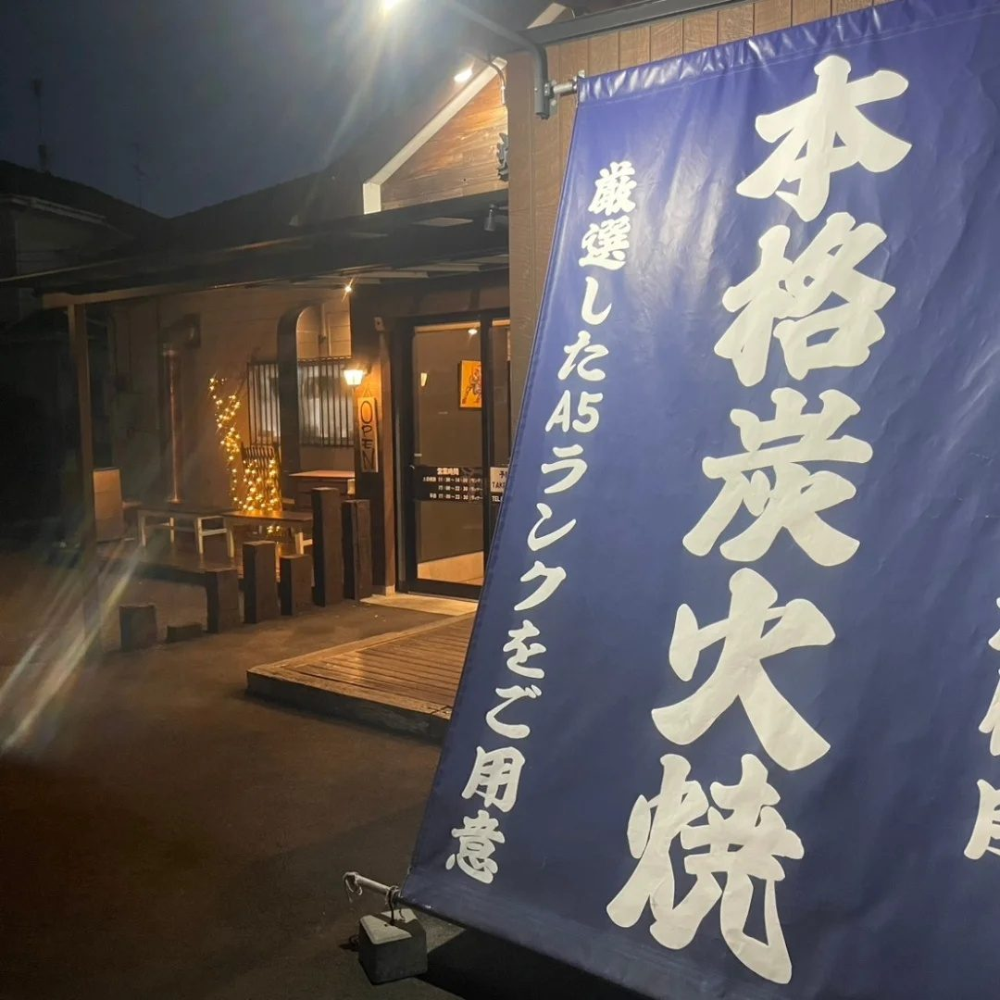
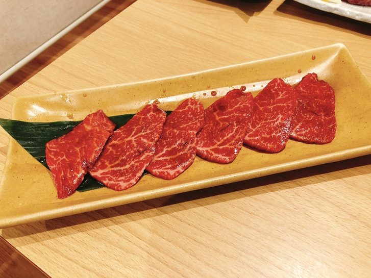
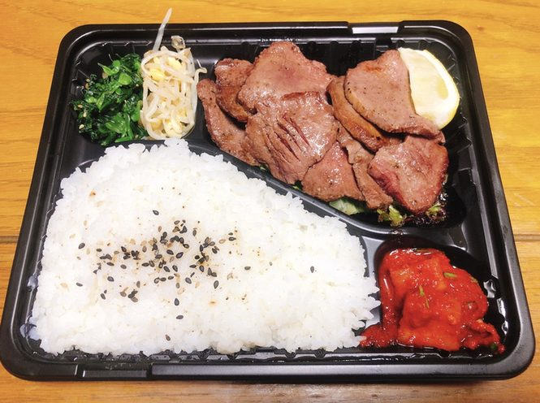
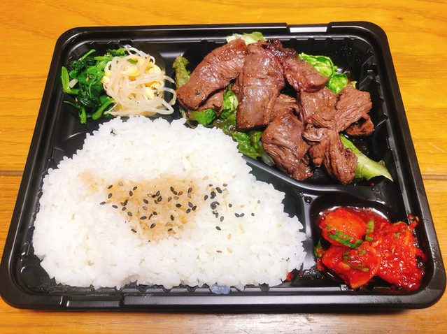
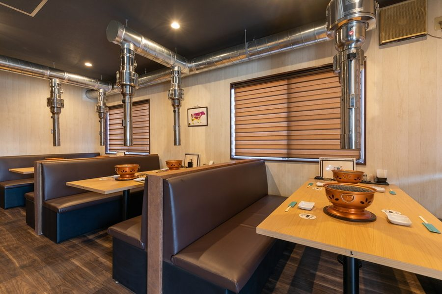
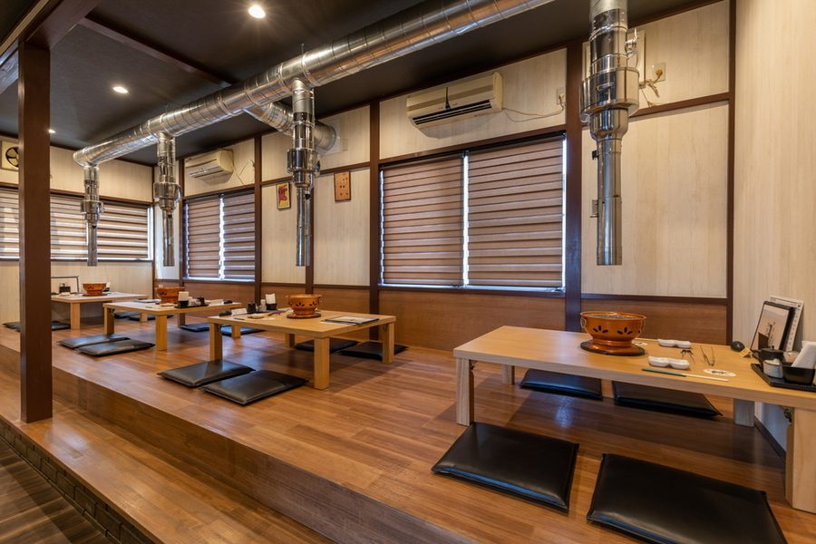
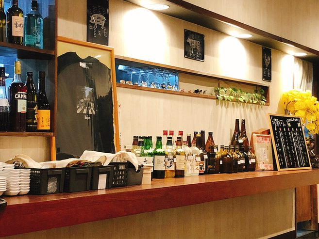
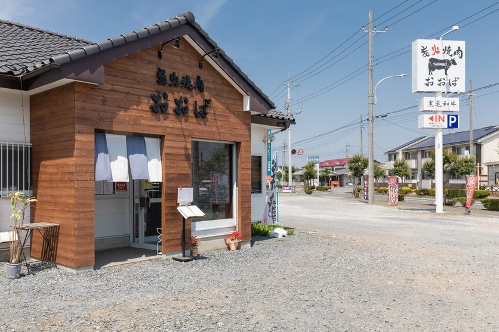

天然の備長炭で。
当店は天然の高級備長炭を使っております。
炭の火はやわらかく、遠くまで届きます。厚く切ったお肉も、中まで火が通るまで焦がさずに焼き上がります。
備長炭で焼けるところからテンション上がります
お客様の声より


不定休でございます。当日のお休みはInstagramでお知らせしております。
当店は、黒毛和牛のA5ランクの牝牛だけをお出ししております。
東京食肉市場から直に仕入れ、店で切り分けてご用意しております。
黒毛和牛牝牛は去勢牛（牡牛）にはない脂の甘み、肉の味が特徴でサシは入りにくく、見た目の派手さはありません。肉本来の旨みは牝牛が強いです。基本的に脂の質が違います。脂自体さっぱりしてますので、年配の方にもおすすめです。松坂牛は99%が牝牛です。
ブランドにはこだわりません。こだわるのは「黒毛和牛の牝牛」です。ブランド牛はあくまでブランド、同じ材質の宝石でもブランド名が入ると値段が高騰します。牛も同じでブランド牛は高値で取引され、リーズナブルにお客様に提供するには難しいからです。
ブランド牛だけが美味しいわけではないのを実証いたします。
店内の掲示より
当店は天然の高級備長炭を使っております。
炭の火はやわらかく、遠くまで届きます。厚く切ったお肉も、中まで火が通るまで焦がさずに焼き上がります。
備長炭で焼けるところからテンション上がります
お客様の声より

お値段は、店内のお品書きに掲げております。お電話でもお答えいたします。
下の五品のお値段は、2026年6月現在のものでございます。




お弁当をご用意しております。お品とお値段は、お電話でお伝えいたします。
ご来店の前にお申し付けいただきますと、お待たせせずお渡しできます。



テーブル席と、掘りごたつのお座敷がございます。お子様連れでも、ゆっくりお過ごしいただけます。
ご宴会の貸切も承ります。ご人数・ご予算はお電話でご相談ください。



美味しいお肉をたくさん手ごろにいただける焼肉屋さん。行列になるのもなっとく。
お客様の声より
こんなに厚くて柔らかいタン塩はなかなかお目にかかれませんね
お客様の声より
お肉の美味しさはピカイチ、お肉以外の料理も出汁がきいてて旨すぎる
お客様の声より

| 住所 | 〒306-0221 茨城県古河市駒羽根8-1 |
|---|---|
| 電話 | 0280-33-7829 |
| 営業時間 |
平日 17:00〜22:30（L.O. 22:00） 土日祝 11:30〜14:00（L.O. 13:30）／17:00〜22:30（L.O. 22:00） |
| 定休日 | 不定休 お休みの日は、Instagramでお知らせしております。 |
| お席 | テーブル席と、掘りごたつのお座敷がございます（全席禁煙） |
| ご宴会 | 貸切も承ります。ご人数・ご予算はお電話でご相談ください。 |
| 駐車場 | 23台 |
| お支払い | 現金クレジットカード古河市はなもも商品券 |
週末は混み合いますので、お電話でのご予約をおすすめしております。